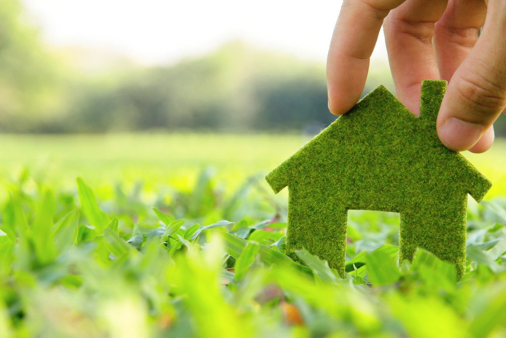
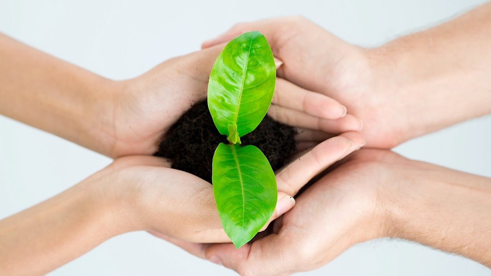

our problem:
- 1.Is that it causes a increase of environmental problems.
- 2. Causes pollution: Pollution of air, water and soil require millions of years to recoup. Heavy metals, nitrates and plastic are toxins responsible for pollution.
- 3. Adds to Global Warming: Climate changes like global warming is the result of human practices like emission of Greenhouse gases.Global warming leads to rising temperatures of the oceans and the earth; surface causing melting of polar ice caps, rise in sea levels and also unatural patterns of precipitation such as flash floods.
- 4. Increases Overpopulation: The population of the planet is reaching unsustainable levels as it faces shortage of resources like water, fuel and food.Population explosion in less developed and developing countries is straining the already scarce resources.
Resurface. Reupholster. Repaint. Refinish. Make something old new again.

benefits of recycling:
- 1. Reduce the Size of Landfills:
One of the biggest reasons why recycling has been promoted is that it does reduce the strain on our environment.
By utilizing waste products in a constructive way, we can slowly decrease the size of our landfills.
- 2 .Recycling reduces the need for extracting (mining, quarrying and logging),
refining and processing raw materials.
- 3. Using recycled materials in the manufacturing process uses considerably less energy
than that required for producing new products from raw materials.
- 4. Helps create jobs in the recycling and manufacturing industries in the United States
- 5. Supports American manufacturing and conserves valuable resources
- 6. When we recycle, recyclable materials are reprocessed into new products,
and as a result the amount of rubbish sent for incineration reduces
Plastic Bags and other Plastic Garbage Thrown into the Ocean Kill as Many as 1,000,000 Sea Creatures a Year. Don't Be a Total Bummer. Choose Reusable Bags.

get involved:
- 1. Ditch Plastic Bags :Do you have a seemingly endless supply of plastic shopping bags stuffed away in a cabinet somewhere? Instead of continuing to accumulate pointless plastic bags, reduce waste by making a habit of taking a few reusable tote bags with you on your grocery runs.
- 2. Recycle Whenever Possible: Instead of tossing everything into one waste bin, start separating recyclable items from your regular trash.
- 3. Cut Back on Disposable Items: It might be tempting to buy disposable or single-use items for the sake of convenience, but they create tons of needless waste.
- 4. Start a Compost Bin:Instead of sending your coffee grounds, eggshells, and stale bread to a landfill, make a fun family project out of building a compost bin and learning what is and is not compostable.
- 5. Give to Those in Need:If you want to avoid wasting food and also give back to your community, you can take any uncooked, pre-packaged food products and donate them to a local food pantry.
- 6. Bring Your Own Lunch: Instead of buying takeout every day and accumulating heaps of plastic to-go containers, meal prep at home and bring your lunch in a reusable lunchbox or storage container whenever possible.